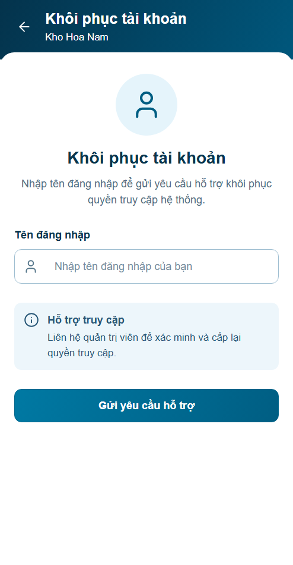
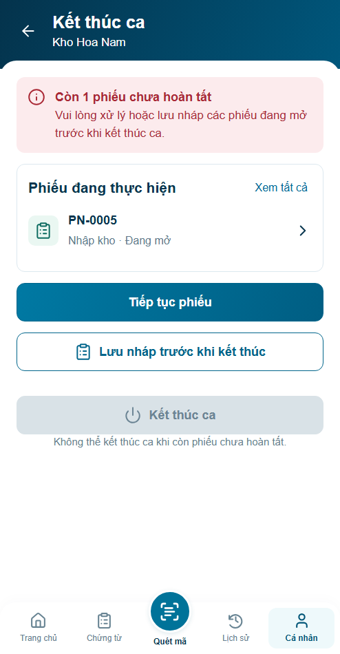
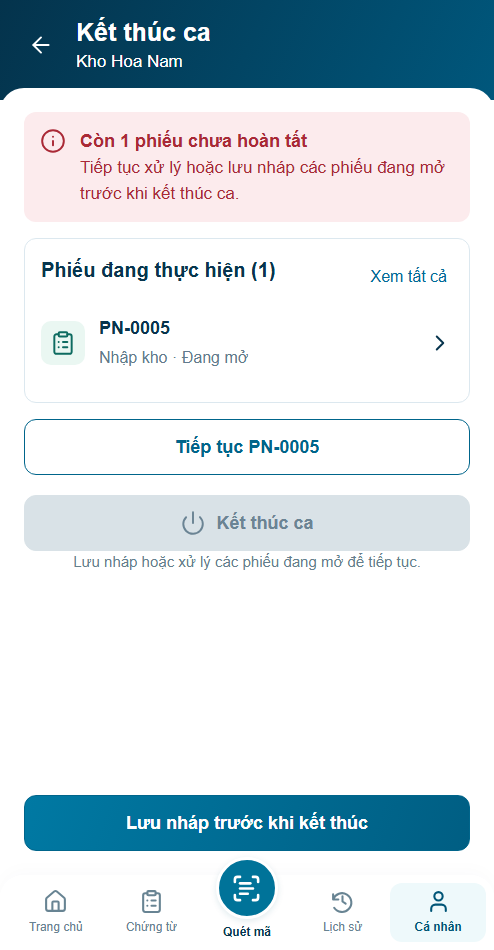
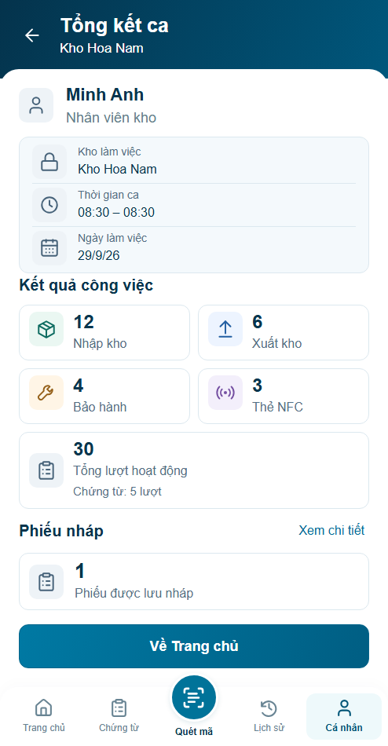
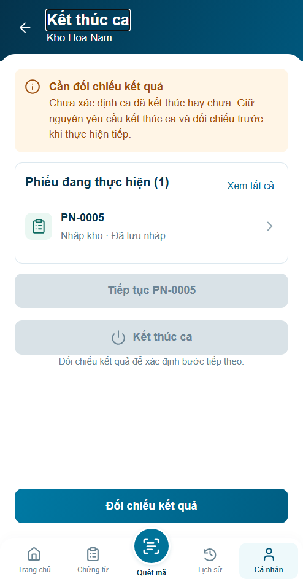
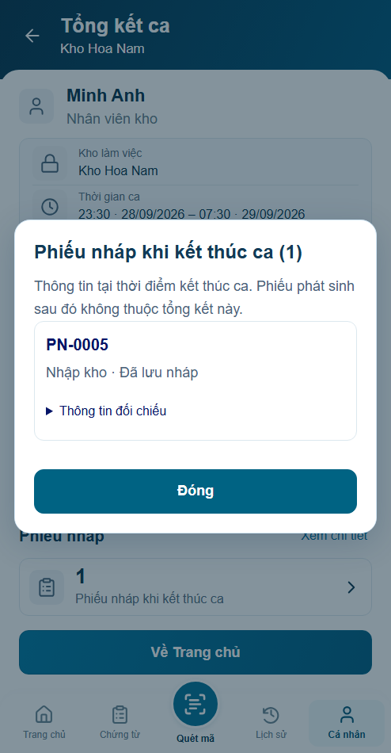
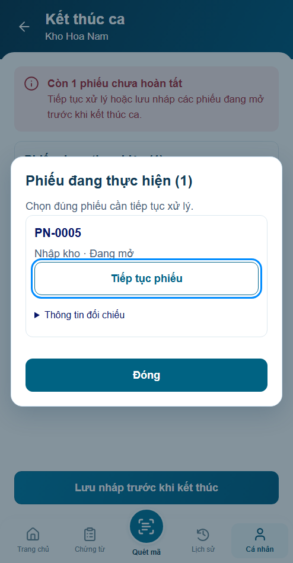
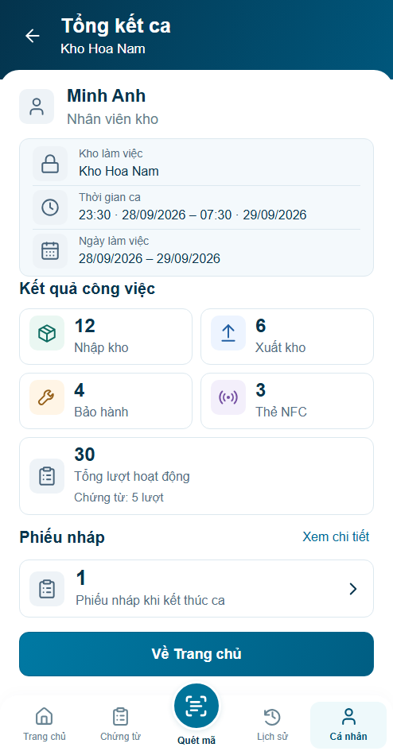

Trước

Đã sửa5vấn đề audit;30nhóm browser/24Node đạt. Hình thức chờ user review, backend chưa tích hợp.
Báo cáo · Nguồn/quyết định · Đủ4panel










Before/after494×950 CSSpx, DPR1, clock08:30. States qua đêm/UNKNOWN là fixture riêng; không xác nhận WMS.